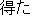
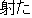

Towards a Thesaurus of Predicates
Satoshi Shirai+, Kazuhide Yamamoto+, Francis Bond++ and Hozumi Tanaka+++
+ATR Spoken Language Translation Research Laboratories
2-2-2, Hikaridai, Seika-cho, Kyoto, 619-0288, Japan
{shirai,yamamoto}@slt.atr.co.jp
++Communication Science Laboratories, Nippon Telegraph and Telephone Corporation
2-4, Hikaridai, Seika-cho, Kyoto, 619-0237, Japan
bond@cslab.kecl.ntt.co.jp
+++Graduate School of Information Science and Engineering, Tokyo Institute of Technology
2-12-1, Oookayama, Meguro-ku, Tokyo, 152-8552, Japan
tanaka@cl.cs.titech.ac.jp
Abstract
We propose a thesaurus of predicates that can help to resolve
pre-editing and/or post-editing problems in machine translation
environments. It differs from earlier approaches such as conventional
dictionaries in that we are aiming to link a wide range of near-synonyms
and paraphrases. We are compiling such similar examples through both
introspection and the use of translation data, giving us a large
collection of monolingual and bilingual equivalences. This thesaurus
enables the following machine translation techniques.
| (a) | |
Unification of synonymous expressions in the source language
(source language paraphrasing). |
| (b) |
Conversion of homonymous expressions to more easily translated ones
(source language rewriting). |
| (c) |
Development of expressions appearing in the target language into
various expressions (target language paraphrasing). |
[ In Proceedings of LREC 2002, Vol.6, pp.1965-1972 (May, 2002). ]
INDEX
1. Introduction
If we view machine translation from the user's viewpoint, the utilization of
this technology can be classified into information assimilation,
information dissemination, and computer aided translation, each with
different requirements (Boitet 2001). To date, researchers of machine
translation have maintained the position of uniformly requiring pre-editing and
post-editing. Users of machine translation, however, have considered this to be
a serious obstacle. We first attempt an easy adjustment of these requirements
and tolerances since they are quite dependent on the utilization of the
technology.
An example of information assimilation is the case of viewing a thesis or
homepage in a foreign language. Machine translation can be used here in place of
directly reading the foreign language if the user's burden is mitigated, but it
is desirable for the translation quality to be as high as possible. With
information assimilation, however, it is impossible to require
pre-editing. In addition, in a number of cases, no post-editing is performed;
however, since the user might act spontaneously when the situation calls for
action, the tolerance level is wide. Many of today's commercial translation
systems are considered to fit this description to some extent.
As information dissemination, we can think of using machine translation to
reduce the translation time in order to accommodate, for instance, flash news
reports. There are several system implementation examples corresponding to this
case, but the number is small. Naturally, if we were to presuppose post-editing
for this type, the translation time could not be reduced; we therefore need a
high translation sentence quality that does not require just post-editing. A
small amount of pre-editing may be tolerable. However, the system construction
generally adopted by the development side, i.e., a structure that allows the
user to give feedback in the pre-editing process depending on the accuracy of
the translation result, might not be well received from the viewpoint of
shortening the translation time. We believe that the actual system construction
should allow the system to point out hard-to-accept expressions in advance.
This problem might be caused by the fact that the requirements for computer
aided translation have not been fully examined. MT researchers dislike having
to set tacit presumptions on the utilization of the user well informed about
both the input language and the output language. Because of this, it is the user
who is required to carry out both the pre-editing and post-editing. However, a
user well informed about both languages, like a system that a translator
employs, is almost completely limited to the translation memory type or the
dictionary search tool. When machine translation can be used, the translation
unification of special terms, etc., can be considered as the substitution of a
dictionary search tool.
There are several reasons why translators do not use machine translation, but
from the viewpoint of reducing labor, at minimum text should be translated
correctly in paragraph units without pre-editing. If this requirement were
satisfied, labor savings might be possible in terms of the entire translation
process, even if word replacement or word paraphrasing as post-processing were
carried out toward synonymous expressions (in order to prevent the translations
from becoming monotonous) and the translations were rearranged. However, if this
requirement cannot be satisfied (i.e., the translation quality requirement is
higher than that of information dissemination), it is more efficient at this
point to translate everything by oneself. Contrary to intuitive expectations on
the development side, this may be the most difficult research problem.
Incidentally, if we cross examine these forms of utilization and, for example,
use a thesaurus of these expressions, we believe we can solve one of the
problems.
Since the start of research in this field, studies have been done on improving
the efficiency and automating the pre-edit and post-edit. Methods tested on the
pre-editing side include methods employing specialists, methods creating manuals
from know-how and utilizing them toward restricted language targets, and methods
that automatically carry out pre-editing. A well-known method on the
post-editing side attempts to systematically reflect changes in the translations
and expressions in the whole document. Although these methods differ in the
steps and procedures that they employ, we can say that as a rule they do try to
extract the peculiarities of the translation system.
Under this strategy, individual correspondences are indispensable for every
translation system. That being the case, however, it is difficult to find an
all-purpose technique. Automation, as the opposite idea, might be possible
provided we had a method to prepare various synonymous expressions beforehand,
and carry out matching and translation on everything that the translation system
can accept.
If we think about post-editing by translators from the viewpoint of computer
aided translation, although the contents would be treated variably, computer
aided translation by computer could still be used in many cases if the
translations were handled one item at a time. As mentioned above, in order to
prevent a sentence from becoming monotonous, a translator might perform
replacement or paraphrasing toward synonymous expressions. A lot of translators
have independent thesauri (much-treasured) prepared individually based on the
accumulation of experience, and these translators use these thesauri and replace
or paraphrase words and phrases. Computer aided translation would allow the
influence on expressions by noun substitution to be done locally and more
easily, although verb substitution would often take a lot of time since syntax
would also need to be corrected. Also, even though thesauri of words are
substantial, there are only fragmentary thesauri that include syntax of verbs.
Viewed in this light, we might be able to give solid replies to the above
demands if we could cover as many diverse predicate expressions as possible and
use a thesaurus containing these synonymous relations. The authors view the
real problem as the lack of thesauri covering structures as opposed to the
numerous thesauri covering words. As one means of achieving sentence structure
replacement, we consider directing our effort toward the development of a
thesaurus containing sentence structures. WordNet (Fellbaum 1998) has a very
useful thesaurus of English verbs, and most of the verbs have example sentences,
but there is not a lot of syntactic information: words are linked, not
structures.
As a realistic approach, we use the Japanese-English Paraphrase Corpus (Shirai,
et al., 2001), and we test our reconstruction by using sets of expressions by
assuming the corpus' predicate expressions as indices. Below, we explain how we
collected comprehensive and various example sentences, and the thesaurus is
generated from them by adding the predicate index for each sentence.
2. Background
Lexical resources already exist where basic Japanese-English predicate frames
are paired together. For Japanese and English, 14,000 Japanese-English basic
patterns are given in "Goi-Taikei: A Japanese Lexicon" (Ikehara, et al.,
1997). This has been motivated by the improving Japanese-to-English machine
translation quality, and Fujita & Bond (2002) are expanding them in their
ongoing project. Here, the term pattern describes a verb, adjective, or
noun-copula, along with its arguments (mainly noun-postposition combinations).
Even so, problems still remain that need to be addressed, such as the coverage
of the types of expressions and the restrictions on the use of each expression,
the diversity in the types of expressions able to express the same meanings, and
the description of the pattern constraints (Shirai, et al., 1998).
The coverage problem is caused by characteristic differences between
dictionaries designed for human use and dictionaries designed for machine use.
A somewhat limited Japanese-English dictionary uses words and usages having
above-average usage frequencies. This is a common design measure for a human
use dictionary. However, such a dictionary perhaps intentionally excludes words
and usages of comparatively lower usage frequencies. When humans use the
dictionary, they obtain words and usages suitable for their purposes by
performing trial and error, i.e., they change and reword what they want to say
using different expressions until the target words or usages are suitable. It
is very difficult to achieve the same kind of mechanism in computer processing,
and accordingly, attempts have been made to comprehensively record the words and
usages for machine-targeted dictionaries. Examinations are continuing in order
to improve the coverage of basic patterns by the collection and abstraction of
examples (Shirai, 1999).
The problem of diversity lies in the uniformity of translations: the same
expression will always be translated in the same way. This is both an advantage
and disadvantage of machine translation. Another cause is that the
correspondences of Japanese-English basic patterns are normally limited to
one-to-one correspondences. This may be a result of trying to produce initial
results quickly. The uniformity of translations can be a disadvantage because
of the monotomy of the translated sentences. When machine translation is used
as a tool, one of the post-editing processes is to diversify expressions using a
thesaurus. The influence of doing so is great when substituting verbs in many
cases while the influence is significantly less when substituting nouns. We
believe that it would be very useful if there were a thesaurus for patterns
(like thesauri of regular words) and if it also corresponded with the sentence
pattern substitution in machine translation.
A proposal has been made to separate the Japanese parts and the English parts,
resulting in two monolingual lexicons with a smaller linking lexicon (Baldwin,
et al., 1999). In this case, the selectional restrictions on the source
language would cease to be influenced by the target language equivalent, making
for more natural monolingual dictionaries. This architecture makes it far
easier to add more potential translations, as each new pair would just be a
link, rather than a full pair of Japanese and English patterns.
The cause of the condition description problem is assumed to be that the
original valency dictionary was designed for analysis purposes, and the
description of the conditions was done by hand. The former, for example,
abstracts a noun based on a semantic system such that "Musume-ga mago-wo umu
[The daughter has given birth to a grandchild]" becomes "<person> has
given birth to <person>", and "Inu-ga koinu-wo umu [The dog has given
birth to a puppy]" becomes "<animal> has given birth to <animal>".
Then, if we integrate both, we get "<person or animal> gives birth to
<;person or animal>". Obviously, the mutual relationship between a noun of
the ga case and its corresponding noun of the wo case is lost.
Although there are very few problems in the acceptance of linguistic expressions
with the "typical" (assuming correct sentences) analysis processing,
unsuitable combinations are produced in the language generation besides the
emergence of detection problems when an attempt at use is made in the detection
of errors.
In terms of preparing a valency dictionary as a basic dictionary of Japanese
language analysis and Japanese-English translation, importance had been placed
on coverage until now. At present, we believe that the utilization of human
soul-searching is effective, where analysts try to invent as many possible
paraphrases as they can. This is necessary because it is not easy to obtain a
large-enough corpus to obtain low-frequency words and information related to
their usages. In other words, at present, such utilization seems to be an
appropriate step for accumulating data since there is only fragmentary
information on the diversity of expressions. Accordingly, focusing on sentences
for Japanese-English translation collected as a part of improving the coverage
of Japanese-English basic patterns (Shirai, 1999), we found that sufficient
results are possible by assuming constrained semantic correspondences between
Japanese and English sentences and attempting to collect sentences spoken in
other ways for Japanese sentences. The same results were also obtained for
English sentences. Below, we explain an outline of the collection method and
the trial and error we used to refine this method. Then, we continue on the
collection methods of the paraphrased sentences.
3. Collection Method
In the past, we aimed at improving the coverage of the valency dictionary and
used example sentences by soul-searching. In the soul-searching, we often
considered the possibility that the arbitrariness of the created example
sentences would become problematic. However, we also believed that this
arbitrariness problem would not easily occur, since our problem setting was
where usages were enumerated and not where a small number of example sentences
matching specific scenes were created. There was the occasional problem
concerning whether or not it was possible to call a generated example sentence a
natural expression. For this problem, the same person reconsidered the
problematic sentence after a certain amount of time had elapsed or exhaustively
carried out the work with others through mutual checking.
Below, we first show the method when carrying out implementation aiming at
improving the coverage, and then show the current method aiming at improving the
diversity.
3.1. Collection of comprehensive examples
First, we covered various usages by soul-searching in the form of example
sentences and decided to consider them in two steps to abstract the example
sentences. This was because our final aim was to improve the coverage of the
valency dictionary despite the fact that it is not easy to collect abstracted
sentence patterns. As a criterion of selecting a terminology for the creation
of an example sentence, we separately judged whether the terminology was
suitable as terminology of the modern language. Here, we chose only one
dictionary and created a policy that it be used as a rough standard. At times,
it was problematic to judge whether or not a generated example sentence was a
natural expression. Concerning this point, the same person reconsidered the
problematic sentence after a certain amount of time had elapsed or exhaustively
carried out the work with others through mutual checking. We set the following
conditions based on our work experiences1.
| (1) | |
If the predicates can be found in "Gendai Kokugo Rêkai Jiten"
(Hayashi, 1985; 1997), consider the existing words and example sentences, and
then create example sentences from imagination.
Comments: While creating the example sentences, we excluded those
that posed difficulty in the sentence creation process based on discussions with
other example sentence composers. |
|
|
|
| (2) |
If there are differences in opinions between the analysts, try to
make as many example sentences as possible. Use nouns with broad meanings as
much as possible.
Comments: This work was carried out by the people creating the
Japanese expressions. In other words, we did not require any work where
corresponding English translations differed. As a result, we allowed translated
words to be the same. |
|
|
|
| (3) |
In creating the example sentences, look at differences in nuance
between adverbial forms and adnominal forms, i.e., do not only look at example
sentences where predicates are of the finite form.
Comments: This was based on the consideration that there are
idiomatic usages in the adverbial usages of adverbial forms and attributive
usages of adnominal forms, and we dealt with their sets too. For example, when
we make sentences for manzoku-da "be satisfied", we also add examples
for manzoku-na "satisfied" (attributive) and manzoku-ni
"properly", where necessary. |
|
|
|
| (4) |
Aim for at least two example sentences per predicate. Here, create
sentences until no more example sentences can be conceived after a certain
degree of consideration.
Comments: Based on our experiences to date, if we assume the
creation time of n sentences to be t, t is approximately
proportional to n2. We therefore decided to stop work for a predicate if
after 10 to 15 minutes no new usages could be thought of. |
|
|
|
| (5) |
For the example sentences that are collected, have them made into
English translations by translators so that the results are true to the
originals as much as possible and also that they are sufficiently fluent as
English (free translations are allowed to a limited extent).
Comments: Based on our experiences, we asked for the cooperative
work of native English translators and native Japanese translators. |
3.2. Collection of various examples
The most direct motive here is to get more than one English translation for one
Japanese expression. This can also be called the paraphrasing of English
expressions. However, this does not necessarily mean that several English
expressions absolutely must be generated from a specific Japanese expression.
Considering this, we decided to implement Japanese paraphrasing and English
paraphrasing in parallel.
The concept of collecting paraphrased cases should perhaps include the
collecting of synonymous expressions within the same language from some
viewpoint. However, there are many cases in which other expressions cannot be
easily thought of after example sentences are shown and people become dazzled by
them. It is also difficult to enumerate types of viewpoints beforehand.
Accordingly, here we presuppose the existence of Japanese-English translation
pairs, and while we use these Japanese-English sentence pairs under constraints,
that is, as we make various translation example sentences, we also collect
paraphrased cases.
The paraphrasing we mention here (for example, in the case of an English
sentence) is something that imitates the generation of a synonymous expression
in Japanese and a re-extraction from a Japanese-English dictionary, when the
system comes across a word or expression that is not in the Japanese-English
dictionary. Accordingly, it is possible that a single language speaker who is
not familiar with the target translation language can also help in the work. As
a real problem, however, there is the fear that the synonymous agreement
gradually becomes broader, i.e. the difference in the meaning expands, when
different expressions that are thought of one after another are not recorded in
the Japanese-English dictionary. In fact, in our current attempt, such trials
were present, and the people responsible for the comprehensive example
collection had to make special requests to the translators responsible for the
example sentences. Our experiences have shown that it is not easy to judge
subtle Japanese-English correspondences when securing coverage. In the future,
we hope to improve the following condition settings based on an analysis of the
current problems.
| (1) | |
To deal with example sentence pairs of Japanese-English translations
for Japanese predicates as described in the preceding section. |
|
|
|
| (2) |
To have Japanese paraphrasing be carried out with the intent of
attaching various Japanese translations to English, and vice versa (to have
English paraphrasing be carried out with the intent of attaching various English
translations to Japanese example sentences). |
|
|
|
| (3) |
As a principle, to create neutral expressions where special scene
settings are unnecessary. |
4. Collection and Considerations
Based on the idea of valence by Ishiwata (Ishiwata & Ogino, 1983), we began to
construct a semantic valency dictionary as the base of a valency dictionary by
abstracting example sentences of a somewhat limited Japanese-English dictionary.
In the early version, we collected 10,000 general sentence patterns and 3,000
idiomatic sentence patterns. However, we immediately found that the frequent
lack of sentence patterns was problematic in experimental evaluations.
Therefore, we searched for a way of covering sentence patterns automatically.
Realistically, it is not easy to obtain a sufficiently large corpus in
collecting low frequency usages. Accordingly, we decided to collect various
usages as example sentences by "soul-searching".
| |
No. of Words | Created Sentences | |
Paraphrases | |
w/o Paraphrase | |
Work Order and Contents |
| Jpn | Eng | Jpn | Eng |
|
|
|
| Japanese verb /IPAL |
849 | 16,713 | 7,043 | 4,096 | 12,020 | 13,748 |
0 (IPAL), 1 (add), 3 (modify), 8 (paraphrase) |
| Japanese verb /others |
936 | 1,883 | 0 | 0 | -- | -- |
7 (collect) |
| compound Japanese verb |
2,101 | 3,701 | 1,212 | 480 | 2,487 | 3,220 |
4 (collect), 9 (paraphrase) |
| -i type adjective/IPAL |
136 | 2,156 | 530 | 219 | 1,626 | 1,937 |
0 (IPAL), 2 (add), 6 (modify), 11 (paraphrase) |
| -i type adjective/others |
522 | 830 | 1,561 | 1,584 | 1 | 0 |
12 (collect & paraphrase) |
| -na type adjective |
1,296 | 2,356 | 621 | 440 | 1,735 | 1,915 |
5 (collect), 10 (paraphrase) |
| Verbal noun (in progress) |
(885) | (1,550) | (4,448) | (4,245) | (6) | (3) |
13 (collect & paraphrase) |
|
|
|
| Total |
5,840 | 27,639 | 10,967 | 6,819 | 17,869 | 20,820 |
Note: Not including verbal nouns. |
Table 1: Types of predicates and the numbers of example sentences.
4.1. Types of predicates and the collection of example sentences
We focused our attention on the IPAL dictionary (Technical Center of IPA, 1987;
1990) in which various usages for individual predicates are recorded as example
sentences. We added usages of different-nuance predicates as example sentences.
Next, we decided to raise the coverage of the predicates based on a Japanese
dictionary, and sought standards for the selection of these words in a modern
example dictionary (Hayashi, 1985). We are now continuing with the creation of
example sentences targeting predicates (i.e. not recorded in the IPAL
dictionary), and are working on verbal nouns2. We are also
doing paraphrasing work, which was started midway through our research.
Table 1 shows the collected data as of March 2002. "Japanese verb/IPAL" deals
with words among the Japanese verbs recorded in the IPAL dictionary, and
"Japanese verb/others" deals with all others. The order of the work and
contents of the work are shown in the comments section. Each item is equal to
an amount of work of one to three years. Some of the parts were implemented in
parallel. Paraphrasing verbal nouns was easier in comparison with the others
because of the more specific meanings.
We compiled a thesaurus of predicates by adding the predicate index of each
sentence. Sample of our thesaurus is shown in Appendix.
4.2. Work history and problems
In this section, we explain the work history and problems in our creation of
example sentences based on the impressions of the people carrying out the work.
This work was started with the aim of covering the usages of predicates. That
is we were trying to create at least one example sentence for every sense of
every Japanese predicate along with its English translation.
At the start, we found a lot of words to be deeply familiar in "Japanese
verb/IPAL" and "-i type adjective", and we understood that colorful
example sentences, i.e., 10 or more example sentences (on average) per
predicate, could be created if we excluded rare exceptions. Initially, there
was a delay since we had to confirm the IPA dictionary set (due to the amount of
example sentences) and its usage overlaps with the created example sentences.
In particular, we needed time to confirm that the IPAL adjective dictionary was
thoroughly classified in terms of the meanings of words in comparison with the
IPAL verb dictionary, and that the recorded example sentences dealt with
detailed differences in nuance. Because of this, we could improve the degree of
allowing example sentences of similar usages to overlap.
There were a lot of words with restricted usages under "compound Japanese
verb" and "-na type adjective", and we therefore decided to stop at two
(or even one) example sentences per predicate. On the flip side, the necessity
arose to add background explanations for better conciseness, since the
expressions became unnatural when we attempted to gather the reduced usages.
Obviously, when an analyst feels unnaturalness, it is typical for his/her degree
of sharpness to be diminished when carrying out repetitive reading, and for the
resulting judgment to gradually become more difficult. In consideration of
this, everyone worked to eliminate unnaturalness by carrying out mutual
checking, and rechecking after intervals.
Opinions were sometimes divided on whether or not a word (before usage under
"Japanese verb/other") was a modern word. For such words, we contrasted ways
of speaking (something) using similar words and judged the validity by mutual
checking, and we also made efforts to create example sentences within the
possible ranges. In spite of this, however, we allowed exclusions due to
judgments made by the people carrying out the work, since there were cases where
they were not confident in the results.
We warmed to the basic idea of creating paraphrased example sentences even while
performing the above work to create example sentences. However, this resulted
in example sentences of "Japanese verb/others" and the work efficiency
appeared higher on the side working to keep pace with comparisons to similar
expressions. In addition, because we did not have concrete condition settings
in terms of what standards should be used to implement the paraphrasing (which
are not easy to determine), we had to assume for the time being each of the
Japanese-English translation pairs to be the target of translation and then had
to establish basic measures to create expressions suitable for the translation.
Under these conditions, we tested paraphrasing for "Japanese verb/IPAL" (where
the example sentence creation was comparatively easier) and "Compound Japanese
verb" (where the example sentence creation was comparatively more difficult).
Then, we assumed the situation where Japanese natives consulted a
Japanese-English dictionary once more for the Japanese-English translations and
dealt with the creation of synonymous expressions close to the predicates. In
this step, strict synonymy was made a requirement. This work resulted in the
creation of paraphrased sentences for 1/2 to 1/3 of the target sentences.
When we identically tested the paraphrasing with "-na type adjective"
and "-i type adjective/IPAL", we found that the work became more
difficult as only about 1/4 could be paraphrased. The cause of this might have
been the lack of a sufficient analysis, but one of the more plausible causes of
this was the difficulty in paraphrasing only nearby predicates. For the
Japanese kare-wa jôzu ni oyogu, "He is a good swimmer." might be
more appropriate than "He swims well.", but the former translation is almost
never created since considerations center on the true translation for an
original sentence in Japanese to English translation. Accordingly, we decided
on an expanded interpretation of the basic measures targeting Japanese-English
translation pairs, preferably to create paraphrased example sentences with the
intent of creating translated sentences.
With "-i type adjective/others", we created Japanese example sentences,
gave multiple English translations to them, and by looking at the results,
created more (other) Japanese example sentences. In this work, we created
paraphrased example sentences of about two-fold the number of example sentences
for basic translations. At present, we are proceeding with the creation of
example sentences using "verbal nouns" under the same conditions as those of
"-i type adjective/others", and are seeing about the same example
sentence results as those of "-i type adjective/others".
4.3. Considerations and Future Work
The objective of illustrative sentence creation is as described in
3., but it has been established as a result of the above-implied trial
and error. From now on, we can expect problems like the ones below to add
complexity. It is particularly important now to examine validity since we have
finally reached a stage with fixed condition settings in terms of the collection
of paraphrased illustrative sentences. We believe that it might also be a good
time to reexamine past views on valency, based on recent research results
(Ishiwata, 1999).
(1) Influence by mastery of work
Dissatisfaction remains with respect to the small amount of created illustrative
sentences and lack of diversity in the initial work (there is a large number of
dissatisfied workers). Although reconsiderations are being made in work
targeting the verbs and adjectives of IPAL, it is due to this work that workers
now subjectively believe that the quality of the illustrative sentences can be
improved. When they first began this task, they also felt the need to reexamine
the concept of carrying out collection by placing limits on the correct
expressions. Naturally, placing limits is meaningless even if incorrect
expressions are collected, as there are a number of misuses that are abundantly
utilized in commonly used Japanese expressions like "(?)

(mato wo
eta, literally, you got the target)" (which is considered as the mixed use of
"
(mato wo ita, literally, you shot the target)" and "
(tou wo eta, literally, you obtain the hit)". These uses should be
collected (with notes) from the standpoint of the practical use of machine
translation.
(2) Verbs and adjectives
There are only a few continuous adverbial usages for verbs (e.g., "tsuide");
in many cases, neither their use as an attributive form nor their use as an
inflection form has a difference semantically. In contrast, there are many
commonly used relationships for adjectives including not only many continuous
adverbial usages but also a large variety of attributive deterministic
usages. Some people might also think that there are no usages of adjectives as
inflections, but in fact confusion has reigned when illustrative sentence
creation has been looked at carefully. This confusion has been brought about by
the difficulty in objectively showing how a usage is not general. Because of
this, reference to the Internet (along with exchanges of opinion among workers)
has been used to investigate and subsequently address the existence of
applicable expressions. Unfortunately, there have been a number of cases
reconfirming the diversity of the expressions. The major flow of work to date
is as follows: 1) selecting Japanese predicates, 2) creating a Japanese example,
and 3) creating an English example. For our part, however, we want to set the
Japanese translation of an English adjective or an adverb as reference, and then
consider the complement of a Japanese illustrative sentence.
(3) General expressions and commonly used expressions
In the early stages, we placed emphasis on the collection of general
expressions, and as a result took in expressions that should have been commonly
used expressions. Comprehensively collecting commonly used expressions is by no
means an easy task (including with what standard to judge common use). However,
there have been many possible literal interpretations among the expressions
considered to be commonly used expressions, and conversely, we have seen cases
where we were not aware about the interpretations on commonly used expressions
while being quite conscious about general expressions. From the viewpoint of
collecting various expressions toward actual use, we believe it might be better
not to establish standards on general common usages.
(4) Polysemous expressions and individual expressions
The number of created illustrative sentences is increasing due to largely
polysemous words, and so it is not easy to examine how comprehensive the usages
are while looking over all of the illustrative sentences. On the other hand, not
only is it not easy to create natural illustrative sentences for individual
words in itself, but the work efficiency is also poor, e.g., judgment must be
made on whether to add a background explanation depending on the situation. In
such cases as those that are at the diametrically opposite end, we believe it
might be effective to carry out some individual work support.
In Fujita, et al. (2000), a support environment targeting the paraphrasing of
nouns is proposed. We hope to reference this environment in the future.
(5) Degree of paraphrasing
In the early stages, we selectively proceeded with the paraphrasing of predicate
portions from the viewpoint of extending our sentence construction
system. However, we found that various expressions could be formed when we
paraphrased groups of rank elements and words as units; we continue to gradually
loosen the conditions. Recently, we have been considering that people might not
really care about the restriction to only assure the correspondence of the
translation, which is a major premise. We have also been thinking that it might
be effective for a person working with Japanese-English translation to mutually
exchange paraphrased results, and then attempt a reexamination. Our aim is to
carry out the paraphrasing of already created illustrative sentences by
mobilizing a number of Japanese native speakers or English native speakers
(while not necessarily requiring bilingual speakers). This approach increases
the degree of objectivity by a majority rule based method.
5. Conclusion and Future Issues
We proposed a thesaurus of predicates and introduced problems related to the
present state and the present work on the illustrative sentence collection of
Japanese predicates (used as the data of the material in the thesaurus). We
reported that reflection based on "questionnaires" is effective when
comprehensively collecting illustrative sentences applicable to various
usages. We also showed that creating various translations in order to create
paraphrased illustrative sentences is a powerful method in the domains of
Japanese-English translation or English-Japanese translation.
Because the method introduced in this paper has been achieved while
incrementally evolving how the work is performed through the accumulation of
experience, there are still a number of problems that should be looked at again
in the illustrative sentences created in the early stages. In addition, although
there is very little collection taking place in cases like nouns serving as
predicates, we want to include into the viewpoints not only cases that function
like attributes but also measures toward diversity in the spoken language
(Takezawa, et al., 2001), and to begin examinations from how we can narrow down
target words.
Although the initial aim of translation-based illustrative sentence creation
work was to improve the comprehensibility of sentence construction systems,
i.e., reduce the number of unknown words in machine translation, we can expect a
wider range of utilization of the illustrative sentence sets themselves by
adding a diversity of viewpoints. We would also like to consider the effective
use of illustrative sentence sets.
6. References
- Baldwin, T., F. Bond & B. Hutchinson, 1999.
- "A valency dictionary architecture for machine translation".
In Proceedings of TMI-99 (8th International Conference on Theoretical
and Methodological Issues in Machine Translation), 207-217.
- Boitet, C. 2001.
- "Four Technical and organizational keys for handling more
languages and improving quality (on demand) in MT".
In MT2010 --- Toward a Road Map for MT, MT Summit VIII
Workshop, 14-21, Santiago de Compostela.
- Fellbaum, C. 1998.
- "A Semantic Network of English Verbs". In WordNet: An
Electronic Lexical Database, Fellbaum, C. ed, Chapter
3, 153-178, MIT Press.
- Fujita, A., K. Inui & H. Inui, 2000.
- "An environment for constructing nominal-paraphrase corpora".
Technical Report of IEICE, TL2000-32, 53-60 (in Japanese).
- Fujita, S. & F. Bond, 2002.
- "A method of adding new entries to a valency dictionary by exploiting
existing lexical resources".
In Proceedings of TMI-2002 (9th International Conference on Theoretical
and Methodological Issues in Machine Translation), 42-52.
- Hayashi, O. ed, 1985.
- "Gendai Kokugo Rêkai Jiten [contemporary Japanese dictionary with examples]"
(edition 1).
Shogakukan (in Japanese).
- Hayashi, O. ed, 1997.
- "Gendai Kokugo Rêkai Jiten [contemporary Japanese dictionary with examples]"
(edition 2).
Shogakukan (in Japanese).
- Ikehara, S., S. Shirai, A. Yokoo, H. Nakaiwa, K. Ogura, Y. Ooyama
& Y. Hayashi (eds.), 1997.
- "Goi-Taikei: A Japanese Lexicon".
Iwanami Shoten Publisher (in Japanese).
- Technical Center of IPA (ed.), 1987.
- "IPA Lexicon of the Japanese Language for Computers, Basic Verbs".
Information-Technology Promotion Agency, Japan (in Japanese).
- Technical Center of IPA (ed.), 1990.
- "IPA Lexicon of the Japanese Language for Computers, Basic Adjectives".
Information-Technology Promotion Agency, Japan (in Japanese).
- Ishiwata, T. & T. Ogino, 1983.
- "Ketsugôka-kara mita nihongo-bunpô [Japanese grammar from the viewpoint of valence]"
& "Nihongo-yôgen-no ketsugôka [valence of Japanese predicates]".
In Bunpô-to Imi 1 [grammar and semantics, volume 1],
Asakura Shoten (in Japanese).
- Ishiwata, T., 1999.
- "Gendai-gengo-riron-to kaku [contemporary language theory and case]".
Hitsuji Shobo (in Japanese).
- Shirai, S., A. Yokoo, H. Nakaiwa, I. Watanabe, N. Takahashi,
- K. Seki, S. Ikehara & M. Miyazaki, 1998.
"Converting NLP dictionary for human use: the valency dictionary".
In Proceedings of 4th Annual Meeting of The Association for
Natural Language Processing, 194-197 (in Japanese).
- Shirai, S., 1999.
- "Toward collecting all valency patterns --from the viewpoint of Japanese-to-English
machine translation--".
Symposium on Sharing and Reusing Linguistic Resources (in Japanese).
http://www.carc.aist.go.jp/nlwww/sympo99/
- Shirai, S., K. Yamamoto and F. Bond, 2001.
- "Japanese-English paraphrase corpus".
In Proceedings of Workshop on Language Resource in Asia, NLPRS-2001
(6th Natural Language Processing Pacific Rim Symposium), 23-30.
- Takezawa, T., S. Shirai & Y. Ooyama, 2001.
- "Characteristics of colloquial expressions in a bilingual travel conversation corpus".
In Proceesings of ICCPOL 2001
(19th International Conference on Computer Processing of Oriental
Languages), 384-389.
Appendix: Sample of a Thesaurus of Predicates.
Footnote
1
To reach these condition
settings, various suggestions were received from people related to the IPAL
project (Technical Center of IPA, 1987; 1990). (Return)
2
Verbal nouns are nouns
that combine with the light verb suru to make a verb. (Return)